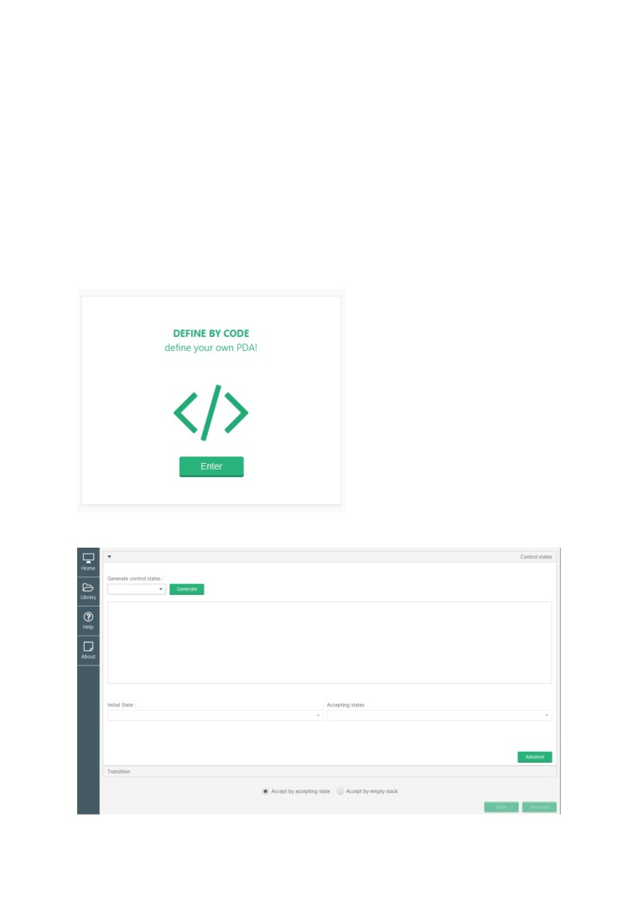
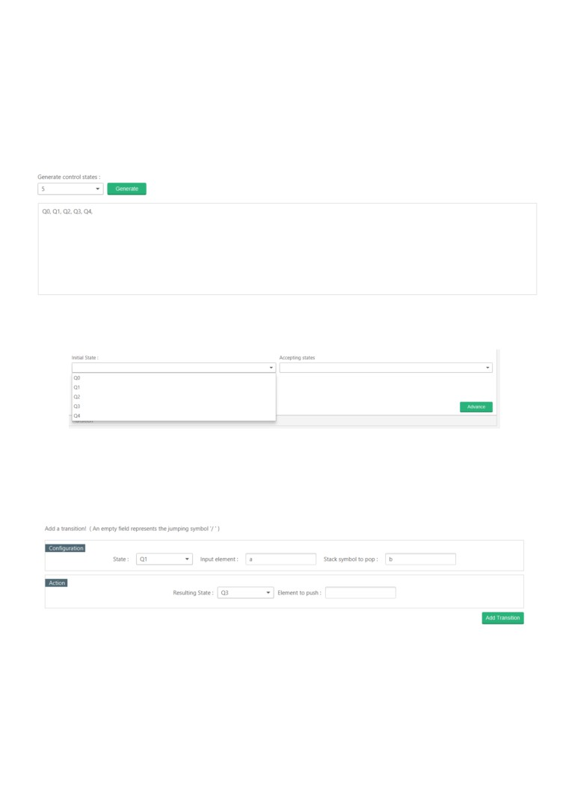
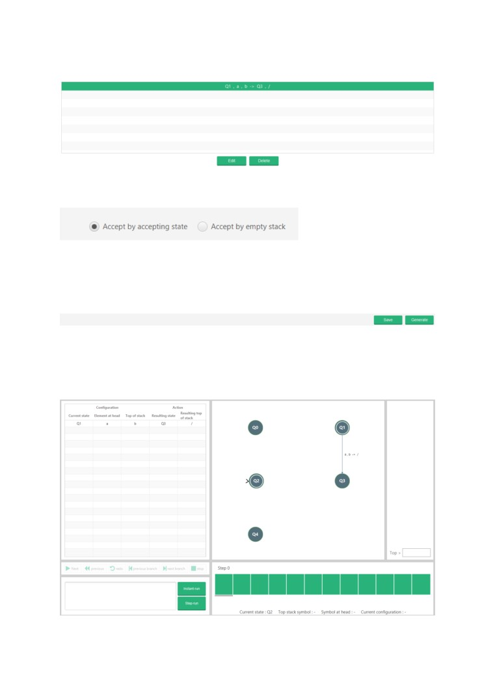
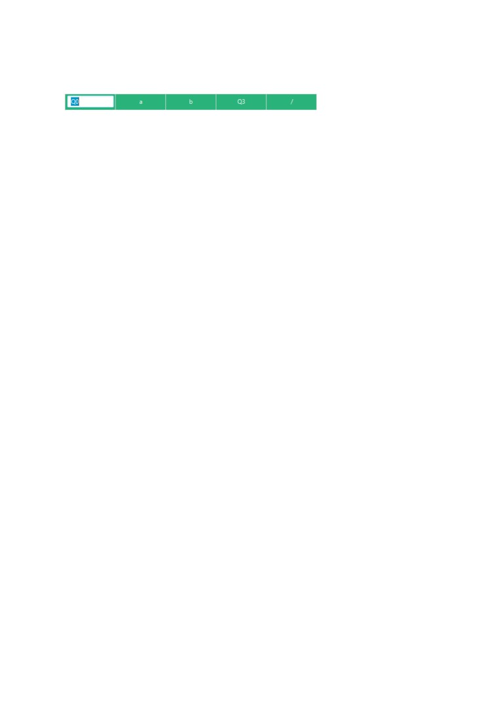
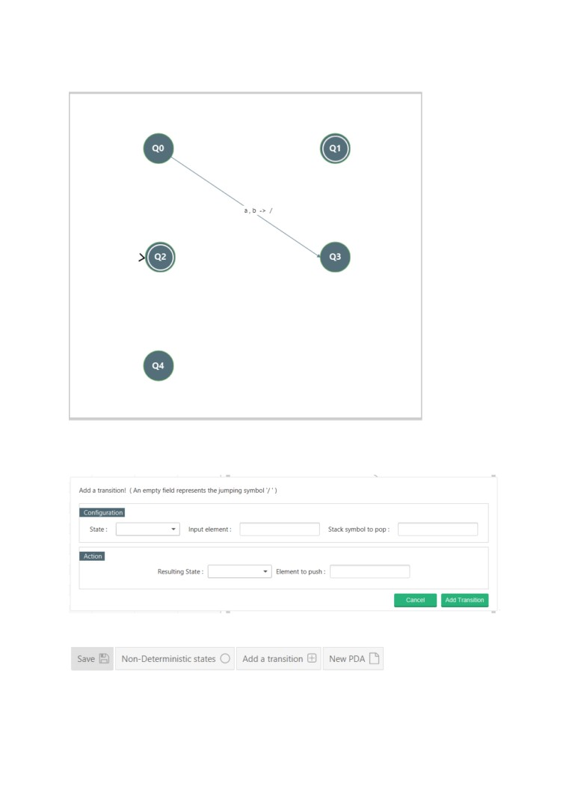

Defining your own push-down automata
Initially, a definition specification describes the requested PDA; this definition is specified by
the user. The application then assesses the correctness of the definition, either accepting or
rejecting it. In the case where the system accepts, the PDA’s definition is saved to memory.
It’s now recognized by the system and can be loaded by the user. When the PDA is
requested, its definition is retrieved from memory and loaded onto the system. The
application requires this definition to build the PDA. Once the PDA has fully been built, it
becomes fully operational.
There is two main way of defining a PDA:
The first of which is “Define by Code” method, which can be accessed from the main menu.
Clicking on this should open the definition window.

You must first specify the control states involved in the pushdown automata and click
Advance before specifying which transitions involved.
Choose the number of control states you want you PDA to have from the drop-down and
click generate. You should see the generated states in the control state terminal below.
From the generated control states, choose the initial states and accepting states.
When you have made a selection, press advance to move on to the next section.
On the next section, it requires you to define the transitions your pushdown automata will
have. Note: the jumping symbol ε, can be represented by an empty text field.

Adding a valid transition will add the transition to the current transition terminal.
You can choose the acceptance criteria for the PDA to be created (Accept by accepting state
is the default).
Once you are happy with the specification, you can either generate the PDA straight away or
save it to memory before running it, which can be accessed at later date in the library section
available on the main menu.
If there is a mistake with the definition provided, it will be made apparent, via the opening of
a pop-up with the adjustment requirement needed to be made before the PDA can be
generated. If it is valid, then the PDA will be loaded on screen.

Later modifications to the definition can be made. Transitions can be modified via the
transition table to left.

This change results in:
You can also add a transition via the toolbar, opening the ‘Add transition window’.
You can save any changes made to the definition by pressing ‘save’ on the toolbar section